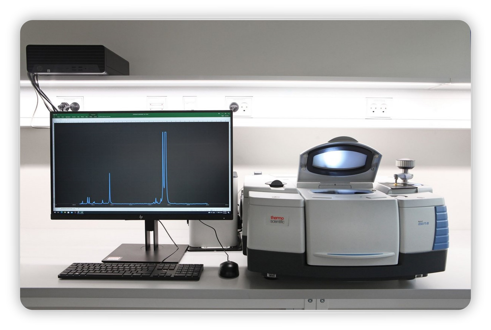

Embarking on my research journey was a significant milestone, fueling my eagerness to gain hands-on experience in the lab. Working alongside a supportive post-doc graduate, I felt warmly welcomed into the lab environment while absorbing invaluable knowledge. Under her mentorship, I acquired proficiency in operating the IS50 FTIR spectrometer and skillfully preparing and testing sample mixtures using the equipment. Under her guidance, I gained valuable insights into the real-world applications of our work. Our research focused on studying trojan asteroids and distinct lunar regions, while utilizing measurements of albedo for various carbon black mixtures to faithfully replicate different lunar terrains for in-depth analysis.
